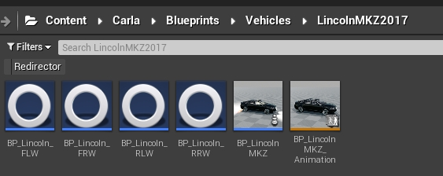
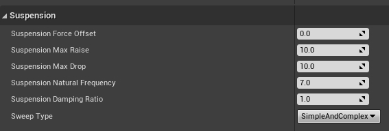

Customize vehicle suspension
This tutorial covers the basics of the suspension system for CARLA vehicles, and how are these implemented for the different vehicles available. Use this information to access the suspension parameterization of a vehicle in Unreal Engine, and customize it at will.
Basics of the suspension system
The suspension system of a vehicle is defined by the wheels of said vehicle. Each wheel has an independent blueprint with some parameterization, which includes the suspension system.
These blueprints can be found in Content/Carla/Blueprints/Vehicles/<vehicle_name>. They are named such as: BP_<vehicle_name>_<F/R><R/L>W.
ForRis used for front or rear wheels correspondingly.RorLis used for right or left wheels correspondingly.

BP_AudiA2_FLW.shape_radius for the wheel to rest over the road, neither hovering nor inside of it.
Inside the blueprint, there is a section with some parameterization regarding the suspension of the wheel. Here are their definitions as described in Unreal Engine.
Suspension Force Offset— Vertical offset from where suspension forces are applied (along Z axis).Suspension Max Raise— How far the wheel can go above the resting position.Suspension Max Drop— How far the wheel can drop below the resting position.Suspension Natural Frequency— Oscillation frequency of the suspension. Standard cars have values between5and10.Suspension Damping Ratio— The rate at which energy is dissipated from the spring. Standard cars have values between0.8and1.2. Values<1are more sluggish, values>1are more twitchy.Sweep Type— Wether wheel suspension considers simple, complex or both.

Note
By default, all the wheels of a vehicle have the same parameterization in CARLA. The following explanations will be covered per vehicle, instead of per wheel.
Suspension groups
According to their system suspension, vehicles in CARLA can be classified in five groups. All the vehicles in a group have the same parameterization, as they are expected to have a similar behaviour on the road. The suspension of a vehicle can be modified at will, and is no subject to these five groups. However understanding these, and observing their behaviour in the simulation can be of great use to define a custom suspension.
The five groups are: Coupe, Off-road, Truck, Urban, and Van. In closer observation, the parameterization of these groups follows a specific pattern.
| Stiff suspension | Coupe | Urban | Van | Off-road | Truck | Soft suspension |
|---|---|---|---|---|---|---|
When moving from a soft to a stiff suspension, there are some clear tendencies in the parameterization.
- Decrease of
Suspension Max RaiseandSuspension Max Drop— Stiff vehicles are meant to drive over plane roads with no bumps. For the sake of aerodynamics, the chassis is not supposed to move greatly, but remain constantly close to the ground. - Increase of
Suspension Damping Ratio— The absortion of the bouncing by the dampers is greater for stiff vehicles.
Coupe
Vehicles with the stiffest suspension.
| Parameterization | Vehicles |
|---|---|
Suspension Force Offset — 0.0Suspension Max Raise — 7.5Suspension Max Drop — 7.5Suspension Natural Frequency — 9.5Suspension Damping Ratio — 1.0Sweep Type — SimpleAndComplex |
vehicle.audi.ttvehicle.lincoln.mkz2017vehicle.mercedes-benz.coupevehicle.seat.leonvehicle.tesla.model3 |
Off-road
Vehicles with a soft suspension.
| Parameterization | Vehicles |
|---|---|
Suspension Force Offset — 0.0Suspension Max Raise — 15.0Suspension Max Drop — 15.0Suspension Natural Frequency — 7.0Suspension Damping Ratio — 0.5Sweep Type — SimpleAndComplex |
vehicle.audi.etronvehicle.jeep.wrangler_rubiconvehicle.nissan.patrolvehicle.tesla.cybertruck |
Truck
Vehicles with the softest suspension.
| Parameterization | Vehicles |
|---|---|
Suspension Force Offset — 0.0Suspension Max Raise — 17.0Suspension Max Drop — 17.0Suspension Natural Frequency — 6.0Suspension Damping Ratio — 0.4Sweep Type — SimpleAndComplex |
vehicle.carlamotors.carlacola |
Urban
Vehicles with a soft suspension.
| Parameterization | Vehicles |
|---|---|
Suspension Force Offset — 0.0Suspension Max Raise — 8.0Suspension Max Drop — 8.0Suspension Natural Frequency — 9.0Suspension Damping Ratio — 0.8Sweep Type — SimpleAndComplex |
vehicle.audi.a2vehicle.bmw.grandtourervehicle.chevrolet.impalavehicle.citroen.c3vehicle.dodge_charger.policevehicle.mini.cooperstvehicle.mustang.mustangvehicle.nissan.micravehicle.toyota.prius |
Van
Vehicles with a middle-ground suspension.
| Parameterization | Vehicles |
|---|---|
Suspension Force Offset — 0.0Suspension Max Raise — 9.0Suspension Max Drop — 9.0Suspension Natural Frequency — 8.0Suspension Damping Ratio — 0.8Sweep Type — SimpleAndComplex |
vehicle.volkswagen.t2 |
Use the forum to post any doubts, issues or suggestions regarding this topic.
Here are some advised readings after this one.